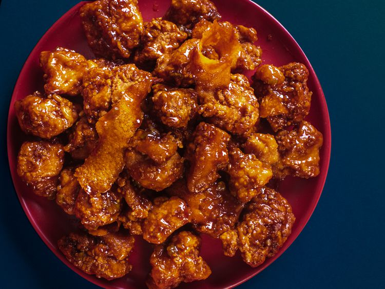

Orange Chicken
Home

Description
This is a chinese-American dish. The base
is a chopped and fried boneless chicken thighs.
The difference between this this dish and other
popular Chinese-American dishes like general-Tsos
or sesame chicken is in the sauce. The sauce uses
parts of real oranges to sweeten the dish.
As a side rice and broccoli will be prepared in a
wok to balance the sweetness and crunchyness of
the chicken. These will be cooked through steaming
and will be left relatively plain, but if you want
to add any additions, feel free to!
Ingredients
For the Marinade:
- 1 large egg white
- 2 tablesppons dark soy sauce
- 2 tablespoons Shaoxing wine
- 2 tablespoons 80-proof vodka
- 1/4 teaspoon baking soda
- 3 tablespoons cornstarch
- 1 pound boneless, skinless chicken thighs,
cut into 1/2- to 3/4-inch chunks
For the Dry Coating:
- 1/2 cup flour
- 1/2 cup cornstarch
- 1/2 teaspoon baking powder
- 1/2 teaspoon kosher salt
For the Sauce:
- 1 tablespoon dark soy sauce
- 2 tablespoons Shaoxing wine
- 2 tablespoons Chinese rice vinegar
or distilled white vinegar
- 3 tablespoons homemade or store-
brought low-sodium chicken stock
- 4 tablespoons sugar
- 1 teaspoon roasted sesame seed oil
- 2 teaspoons grated zest and 1/4
cup juice from 1 orange
- 1 tablespoon cornstarch
- 4 (2-inch) strips dried orange
peel
- 2 teaspoons peanut, vegetable,
or canola oil
- 2 teaspoons minced garlic
(about 2 medium cloves)
- 2 teaspoons minced fresh ginger
(about 1 (1-inch) piece)
- 2 teaspoons thinly sliced scallion
bottoms (about 1 scallion)
To Finish:
- 2 quarts of peanut, canola, or
vegetable oil for deep frying
- steamed white rice and steamed
broccoli for serving
Steps
- For the Marinade: Beat egg
white in a large bowl until broken down and
lightly foamy. Add soy sauce, wine, and vodka
and whisk to combine. Set aside half of marinade
in a small bowl. Add baking soda and cornstarch
to the large bowl and whisk to combine.
Add chicken to large bowl and turn with fingers
to coat thoroughly. Cover with plastic wrap
and set aside.
- For the Dry Coat: Combine flour,
cornstarch, baking powder, and 1/2 teaspoon
salt in a large bowl. Whisk until
homogenous. Add reserved marinade and whisk
until mixture has coarse, mealy clumps. Set aside.
- For the Sauce: Combine soy sauce,
wine, vinegar, chicken stock, sugar, sesame
seed oil, orange zest and juice, and cornstarch
in a small bowl and stir with a fork until cornstarch
is dissolved and no lumps remain. Add dried
orange peel. Set aside.
- Combine oil, garlic, ginger, and minced scallions in
a large skillet and place over medium heat. Cook,
stirring, until vegetables are aromatic and soft,
but not browned, about 3 minutes. Stir sauce
mixture and add to skillet, making sure to
scrape up any sugar or starch that has sunk to
the bottom. Cook, stirring, until sauce boils
and thickens, about 1 minute. Transfer sauce to
a bowl to stop cooking, but don't wipe out skillet.
- To Finish: Heat 1 1/2 quarts
peanut, vegetable, or canola oil in a large
wok or Dutch oven to 350°F (177°C) and adjust flame
to maintain temperature.
- Working one piece at a time, transfer chicken from
marinade to dry coat mixture, tossing in between
each addition to coat chicken. When all chicken is
added to dry coat, toss with hands, pressing dry
mixture onto chicken so it adheres, and making
sure that every piece is coated thoroughly.
- Lift chicken one piece at a time, shake off excess
coating, and carefully lower into hot oil
(do not drop it). Once all chicken is added, cook,
agitating with long chopsticks or a metal spider,
and adjusting flame to maintain a temperature of 325
to 375°F (163-190°), until chicken is cooked through
and very crispy, about 4 minutes. Transfer chicken
to a paper towel-lined bowl to drain.
- Add chicken to empty skillet and return sauce to
skillet. Toss chicken, folding it with a rubber
spatula until all pieces are thoroughly coated. Serve
immediately with white rice.